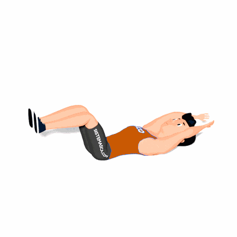

Abdominal Supra com Pernas 90º

Exercício para fortalecimento e hipertrofia da região abdominal. Indicado a praticante de musculação nível iniciante e intermediário.
Ficha Técnica
Tipo: Funcional
Grupo Muscular: Abdome
Aparelho: Nenhum
Músculos: Nenhum
Como realizar
- Deite-se de barriga para cima com os joelhos e quadris flexionados a 90 graus;
- Mãos estendidas acima da cabeça, manter o queixo alinhado ao peitoral evitando sobrecarregar o pescoço;
- Realize a flexão do tronco elevando os deltoides e levando as mãos até tocar os pés;
- Retorne à posição inicial e repita os movimentos.
 RC STORE
RC STORE